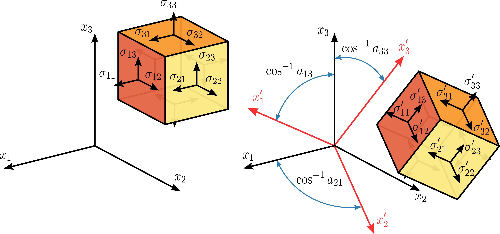

Stress tensor properties
Contents
Stress tensor properties#
Transformation rule of the stress tensor#
From an \(x_i\) - system to an \(x_i'\) - system, the components \(\sigma_{ij}\) in the initial system are transformed into the components \(\sigma_{ij}'\) in the new system according to the tensor transformation rule:
Note that inverse rule is: \(\boldsymbol{{\sigma}} = \boldsymbol{R}^{T} \boldsymbol{{\sigma}'} \boldsymbol{R}\)
{kind=link}
where \(\boldsymbol{R}\) is a rotation matrix with components \(a_{ij}\). In matrix form this is:
In following example we will define stress tensor in orientation given by foliation and lineation plane:
S = stress.from_comp(xx=-8, yy=-6, zz=-2)
p = pair(90, 60, 90, 60)
R = defgrad.from_pair(p) # rotation to local coordinates
lin(0, 0).transform(R)
L:90/60
fol(0, 0).transform(R)
S:90/60
Sr = S.transform(R)
abs(Sr.cauchy(lin(90, 60))) # magnitude of stress on plane perpendicular to 90/60
8.0
Sr = S.transform(R)
abs(Sr.cauchy(fol(90, 60))) # magnitude of stress on plane 90/60
1.9999999999999998
Principal stresses and principal directions#
At every point in a stressed body there are at least three planes, called principal planes, with normal vectors \(\boldsymbol{n}\), called principal directions, where the corresponding stress vector is perpendicular to the plane, i.e., parallel or in the same direction as the normal vector \(\boldsymbol{n}\), and where there are no normal shear stresses \(\tau_{\mathrm{n}}\). The three stresses normal to these principal planes are called principal stresses.
Note three orientations with zero shear stress in following example. Their positions are principal directions:
p = pair(150, 60, 90, 41)
S2 = S.transform(defgrad.from_pair(p))
s = StereoNet()
s.grid.apply_func(S2.shear_stress)
s.contour(levels=10)
s.show()
S2.eigenlins # principal directions
(L:90/41, L:217/34, L:330/30)
S2.eigenfols # principal planes
(S:270/49, S:37/56, S:150/60)
The components \(\sigma_{ij}\) of the stress tensor depend on the orientation of the coordinate system at the point under consideration. However, the stress tensor itself is a physical quantity and as such, it is independent of the coordinate system chosen to represent it. There are certain invariants associated with every tensor which are also independent of the coordinate system. One set of such invariants are the principal stresses of the stress tensor, which are just the eigenvalues of the stress tensor. Their direction vectors are the principal directions or eigenvectors.
S.sigma1, S.sigma2, S.sigma3 # principal stresses of S
---------------------------------------------------------------------------
AttributeError Traceback (most recent call last)
Cell In [9], line 1
----> 1 S.sigma1, S.sigma2, S.sigma3 # principal stresses of S
AttributeError: 'Stress3' object has no attribute 'sigma1'
S2.sigma1, S2.sigma2, S2.sigma3 # principal stresses of S2
Stress invariants#
A stress vector parallel to the normal unit vector \(\boldsymbol{n}\) is given by:
where \(\lambda\) is a constant of proportionality, and in this particular case corresponds to the magnitudes \(\sigma_n\) of the normal stress vectors or principal stresses.
This is a homogeneous system (note zero right side) of linear equations where components \(n_{i}\) of vector \(\boldsymbol{n}\) are the unknowns.
To obtain a nontrivial (non-zero) solution for \(n_{i}\), the determinant matrix of the coefficients must be equal to zero, i.e. the system is singular. Thus,
where
The \(\sigma _{1}=\max \left(\lambda _{1},\lambda _{2},\lambda _{3}\right)\), \(\sigma _{3}=\min \left(\lambda _{1},\lambda _{2},\lambda _{3}\right)\) and \(\sigma _{2}=I_{1}-\sigma _{1}-\sigma _{3}\), are the principal stresses. The coefficients \(I_{1}\), \(I_{2}\) and \(I_{3}\), are called the first, second, and third stress invariants.
S.I1, S.I2, S.I3 # stress invariants
S2.I1, S2.I2, S2.I3 # stress invariants
Tensor decomposition#
A tensor decomposition is any scheme for expressing a tensor as a sequence of elementary operations acting on other, often simpler tensors. Many tensor decompositions generalize some matrix decompositions.
Decomposition of tensor to symmetric \(\boldsymbol{D}\) and antisymmetric \(\boldsymbol{W}\) part, where
Decomposition of tensor to deviatoric \(\boldsymbol{S}\) and volumetric (also known as hydrostatic) part \(\boldsymbol{V}\), where
S2.deviatoric
S2.hydrostatic